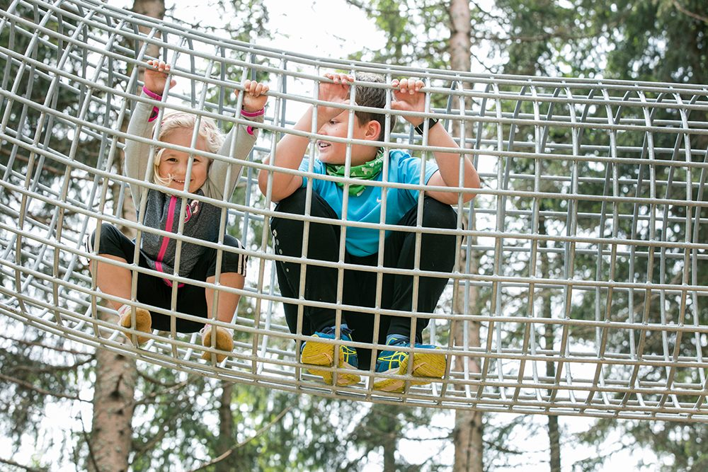

Parcours 1
der Hase
- Körpergröße
- min. 110 cm
- In Begleitung
- 6 bis 13 Jahre in Begleitung einer erwachsenen Person (1:1)
- Unbegleitet
- Ab 14 Jahren unbegleitet (Reichhöhe min. 150 cm)
3 Hektar Parkfläche, 9 Parcours, über 80 Übungen in unterschiedlichen Schwierigkeitsstufen. Der höchste Punkt liegt 13 Meter über der Erde – das Highlight sind 250 Meter reiner Flying Fox und ein „Free Fall“ aus rund 10 Metern.
Jeder Parcours trägt den Namen eines Tieres aus Wald und Alm. Die Anforderungen unterscheiden sich nach Körpergröße, Reichhöhe und Alter – hier findest du alle Angaben auf einen Blick.
Parcours 1
der Hase
Parcours 2
der Junior Adler
Parcours 3
der Auerhahn
Parcours 4
das Eichhörnchen
Parcours 5
der Fuchs
Seilrutschenparcours
Parcours 6
der Luchs
Parcours 7
der Adler
Hoher Seilrutschenparcours
Parcours 8
der Habicht
Langer Seilrutschenparcours
Parcours 9
der Falke
Endet mit einem „Free Fall“ aus ca. 10 Metern Höhe
Die Parcours (ab grün) sind für Besucherinnen und Besucher ab einer Körpergröße von 110 cm geöffnet, die nicht an einer Krankheit oder einer psychischen oder physischen Beeinträchtigung leiden, die beim Begehen des Parks eine Gefahr für die eigene oder andere Gesundheit darstellen könnte. Kinder unter 14 Jahren müssen in Begleitung eines Erwachsenen sein.

Im Almpark darf nur die zur Verfügung gestellte Ausrüstung verwendet werden. Sie darf nicht an andere Personen übertragen werden und das Gelände nicht verlassen.
Die Benutzung des Almerlebnispark Teichalm erfolgt auf eigene Gefahr und eigenes Risiko; Teilnehmende haften für selbstverschuldete Unfälle und Schäden. Eine falsche Anwendung der Sicherungstechnik und Verhaltensweise kann schwere Verletzungen oder den Tod zur Folge haben.
Ist die erwachsene Begleitperson nicht erziehungsberechtigt, ist eine Einverständniserklärung der Erziehungsberechtigten mitzubringen. Damit wird die Obsorge übertragen und bestätigt, dass die Teilnahmebedingungen zur Kenntnis genommen und mit den Kindern bzw. Jugendlichen besprochen wurden. Eltern haften am Gelände des Almparks für ihre Kinder.
Teilnehmende erklären, an keinen physischen oder psychischen Krankheiten zu leiden und nicht unter Alkohol- oder Drogeneinfluss zu stehen. Schwangeren Frauen ist das Begehen der Anlage nicht gestattet.
Der Almpark behält sich vor, die Anlage aus Sicherheitsgründen (etwa Witterung) zu sperren; eine Rückerstattung des Eintrittspreises erfolgt nicht. Das gilt auch, wenn der Besuch auf eigenen Wunsch frühzeitig beendet wird. Für deponierte oder verlorene Gegenstände sowie Defekte an Gegenständen oder Bekleidung wird keine Haftung übernommen – Verschmutzungen durch Harz oder abfärbende Materialien sind je nach Jahreszeit möglich.
Die Pierer Gastronomie GmbH behält sich vor, auf der Anlage Foto- und Filmaufnahmen zu Werbe- und Informationszwecken zu machen. Wer damit nicht einverstanden ist, teilt das bitte ausdrücklich mit.
Auf der bestehenden Website stehen die vollständigen Teilnahmebedingungen für Einzelpersonen und Familien sowie für Gruppen als PDF zum Ausdrucken bereit. In dieser Vorschau sind die Inhalte direkt auf der Seite lesbar – die Anmeldung kann online ausgefüllt werden.
Ab 6 Jahren und einer Körpergröße von 110 cm sind die Parcours 1 bis 4 in Begleitung einer erwachsenen Person (1:1) möglich. Ab 9 Jahren und 140 cm kommt Parcours 5 dazu (Betreuung 1:4). Kinder unter 14 Jahren müssen immer von aktiv kletternden Erwachsenen begleitet werden.
Entsprechende Bekleidung sowie feste, geschlossene Schuhe. Lange Haare sind geschlossen zu tragen. Je nach Jahreszeit kann es zu Verschmutzungen durch Harz oder abfärbende Materialien kommen.
Die maximale Aufenthaltsdauer beträgt 4 Stunden inklusive Warte- und Einschulungszeiten.
Die Öffnungszeiten sind wetterabhängig. Der Almpark behält sich vor, die Anlage aus Sicherheitsgründen zu sperren; eine Rückerstattung des Eintrittspreises erfolgt in diesem Fall nicht. Ein Blick auf die Webcam hilft bei der Planung.
Ja, das zulässige Höchstgewicht für die Teilnahme beträgt 120 kg.
Nein. In den Gastronomiebetrieb darf nicht mit Klettergurt eingetreten werden, ebenso ist der Gurt vor einem WC-Besuch vollständig abzulegen und an der Ausgabestelle abzugeben.